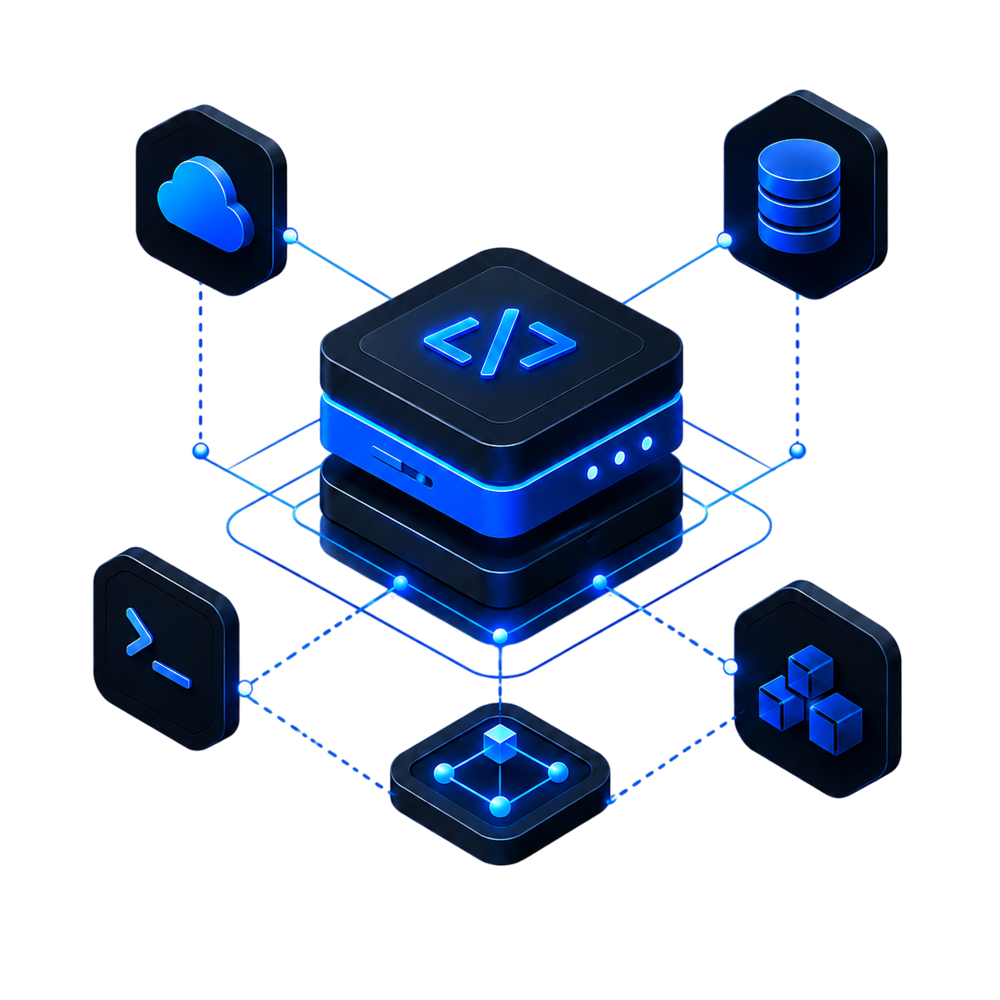

First Release
직접 만든 미니게임을 실제로 배포하며 완성까지 밀어붙이는 경험을 시작했습니다.
realtime · wasm · simulation
실제로 쓰이는 서비스와 데이터 기반 시뮬레이션 도구를 만듭니다.

02 / About
게임 개발, 시스템 모델링, 실서비스 경험이 이어지며 데이터 기반 시뮬레이션과 실시간 서비스 개발로 확장되었습니다.
직접 만든 미니게임을 실제로 배포하며 완성까지 밀어붙이는 경험을 시작했습니다.
디미고에서 게임 개발을 이어가며 규칙, 상호작용, 플레이 흐름을 설계했습니다.
한양대 바이오공학부에서 복잡한 시스템을 분해하고 모델링하는 사고방식을 다졌습니다.
SSAFY 14기와 LostArkSim을 통해 실시간 서비스와 시뮬레이션 도구를 개발하고 있습니다.
03 / Tech Stack
Main Stack: TypeScript · Rust · Python
React, Vite 기반 UI와 서비스 프론트엔드 구현에 사용하는 주력 언어입니다.
WASM 시뮬레이션 엔진처럼 성능과 메모리 제어가 중요한 영역에 사용합니다.
데이터 처리, 자동화, 실험용 스크립트처럼 빠르게 검증해야 하는 작업에 사용합니다.
04 / Project 1
Lost Ark DPS / skill rotation simulator
아르카나처럼 카드 랜덤성과 순간 판단이 큰 직업은 단일 사이클 평균만으로 기대 DPS를 알기 어렵습니다. 스킬 로테이션을 수천 회 반복 실행해 DPS 분포, 스킬별 데미지 비중, 시전 순서를 확인하는 웹 기반 시뮬레이터를 설계했습니다.
05 / Technical Decisions
연산집약적 시뮬레이션을 서버에서 처리하면 고사양 서버와 대기시간 문제가 커집니다. 연산을 클라이언트 WASM으로 옮겨 서버 비용을 낮췄습니다.
결과: 브라우저에서 바로 돌릴 수 있는 구조가 되었고, 반복 실행 비용도 크게 줄었습니다.
cost down · lower latencyWASM Worker 환경에서 profile 메모리 공유와 직접 제어가 필요했습니다. Go의 구조적 한계를 피하고 Rust 기반 엔진으로 전환했습니다.
결과: 엔진의 메모리 제어가 명확해졌고, profile 공유 방식도 단순해졌습니다.
memory control · wasm engine시뮬레이션 결과가 쌓이면 통계, 집계, 분석 쿼리가 중요해집니다. 관계형 구조로 전환해 데이터 분석 가능성을 확보했습니다.
결과: 평균, 분포, 랭킹 같은 결과를 쿼리로 바로 다룰 수 있게 됐습니다.
aggregation · analytics5-10분 이상 걸리던 빌드 병목을 줄여 개발 피드백 루프를 개선했습니다. 기술 선택에서 개발 속도도 핵심 기준이 되었습니다.
결과: 수정-확인 사이클이 짧아져 로테이션 규칙과 UI를 훨씬 빠르게 다듬을 수 있었습니다.
build speed · feedback loop06 / SSAFY Project 1
차원을 넘나들며 최대 100명이 동시에 겨루는 실시간 멀티플레이 미니게임 파티 플랫폼. STOMP + Redis Pub/Sub 기반으로 멀티 BE 클러스터 환경을 지원합니다.
16종 미니게임을 모듈로 묶어 실행하는 공통 기반을 설계했습니다. 라운드 흐름, 게임 로드·전환, STOMP 클라이언트 연동 틀을 포함합니다.
프론트엔드·백엔드 풀스택으로 개발. 영창 입력 흐름과 실시간 점수 동기화를 담당했습니다.
프론트엔드·백엔드 풀스택으로 개발. 게임 로직과 세션 관리를 구현했습니다.
Redis Pub/Sub cross-server private routing으로 멀티 BE 클러스터 환경에서도 랭킹·결과가 모든 유저에게 전달됩니다.
16 Games — 직접 개발 하이라이트
서비스 특징
07 / SSAFY Project 1 — Troubleshooting
| 케이스 | 진단 | 해결 |
|---|---|---|
| 다른 서버 유저에게 랭킹·결과 미전달 |
convertAndSendToUser가 로컬 SimpUserRegistry만 조회 — 멀티 서버에서 타 서버 유저를 찾지 못함 |
Redis Pub/Sub envelope으로 cross-server private routing 직접 구현. 대상 서버를 식별해 메시지를 라우팅. |
| 라이브 랭킹 점수 진동 |
tiebreaker가 매 활성마다 갱신되는 lastUpdatedAt 사용 — 동점자 순서가 매 틱마다 바뀜 |
Instant.MAX 통일 + userId tiebreaker 고정으로 결정적 정렬 보장. |
| 최종 랭킹 0점 또는 빈 화면 |
이전 라운드 stale finalRankingPublished=true Redis 잔재가 다음 게임 finalize를 막음 |
handler.init에서 cleanupRedis를 선행 호출해 이전 상태 완전 초기화. |
| 100인 매치 부하 spike |
게임별 broadcast 주기와 즉시 발사 패턴이 혼재 — 특정 타이밍에 메시지가 집중 폭발 | 1.5초 scheduler-only + PRIVATE per-user 정책으로 통일. 랭킹 dedup으로 변동 없으면 생략. |
서버가 단일 절대시각을 broadcast. 모든 클라이언트가 같은 시각에 게임을 시작해 동기화 오차를 제거합니다.
새로고침·네트워크 끊김 시 10초 내 재접속하면 GAME_LOAD와 START를 PRIVATE으로 재발행해 즉시 복귀합니다.
100명 기준 랭킹 payload 약 360B × 100 = 36 KB. 1.5초 주기 batch로 네트워크 부하를 예측 가능하게 유지합니다.
08 / SSAFY Project 2
Unity 기반 2인 협동 요리 게임. 한 명은 레시피를 읽고 지시하고, 다른 한 명은 실제로 조리합니다. 정보 비대칭이 핵심 재미입니다.
레시피와 재료 주의사항을 파악해 P2에게 실시간으로 지시합니다. 화면은 레시피와 주문서만 보입니다.
실제 조리 환경에서 재료를 집고 자르고 끓입니다. 레시피 화면은 보이지 않아 P1의 지시에만 의존해야 합니다.
기술
09 / SSAFY Project 3
SSAFY 구성원을 위한 커뮤니티 앱. 게시판, 익명 소통, 정보 공유 등 에브리타임과 유사한 구조로 Android와 Web에서 동작합니다.
주요 기능
자유 게시판, 정보 공유, 익명 게시 기능. SSAFY 구성원만의 커뮤니티 공간을 제공합니다.
게시글 댓글과 알림 시스템으로 실시간 소통 흐름을 지원합니다.
앱과 웹 양쪽 모두 배포. 접근성을 높여 더 많은 SSAFY 구성원이 사용할 수 있도록 했습니다.
10 / Side Projects
팀 프로젝트 외에 불편함이나 아이디어를 혼자 빠르게 검증한 결과물들입니다.
구미 캠퍼스 구성원들이 식단 정보를 확인하려고 앱 스크린샷을 올리는 불편함을 해소하기 위해 만들었습니다.
팀 단위로 막연한 아이디어를 구체화하는 과정이 반복적으로 비효율적이라는 것을 느끼고 만들었습니다.
상하좌우 2칸 향수 확산 규칙과 색상 혼합 제약으로 48개 난이도를 직접 기획하고 구현한 퍼즐 게임입니다.
11 / Conclusion
시뮬레이션, 실시간 멀티플레이, 협동 게임, 브라우저 확장, AI 도구까지 —
공통점은 "내가 이해한 문제를 동작하는 결과물로 만든다"는 점입니다.